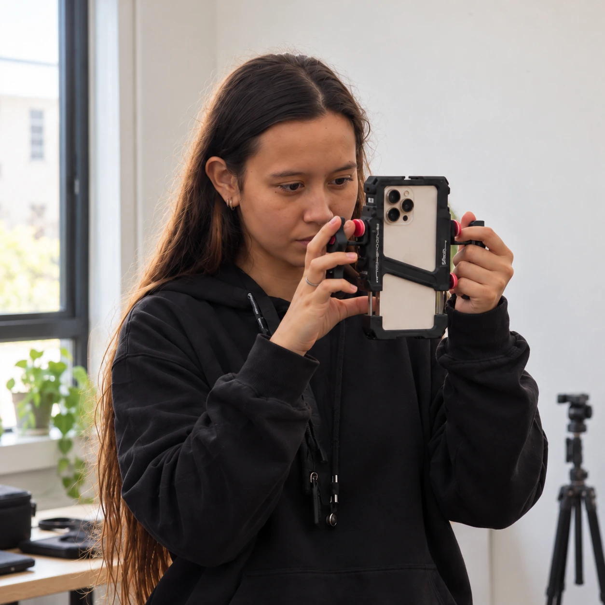
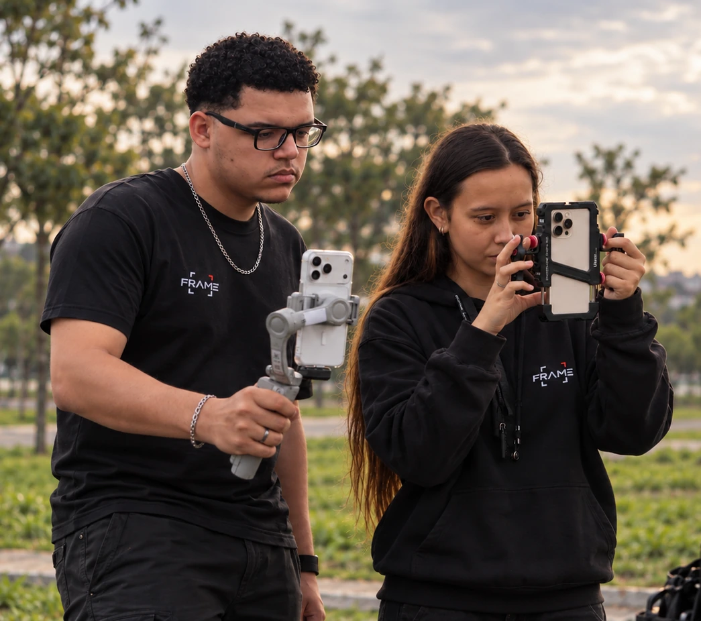
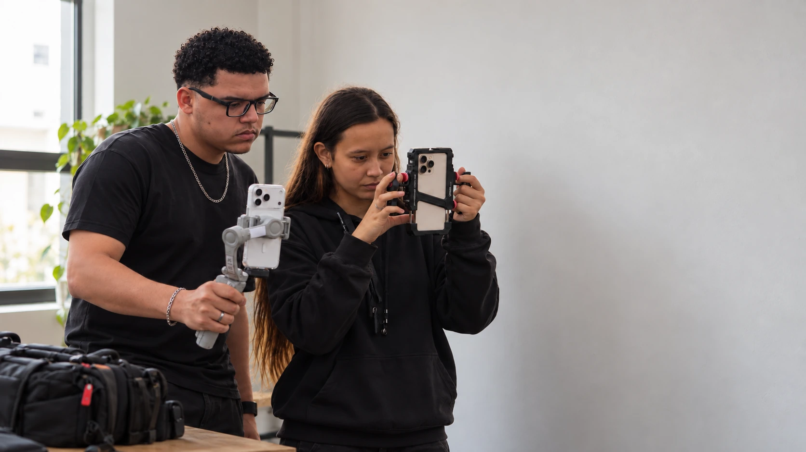

FRAME — direção criativa, audiovisual e marketing
Live what is worth telling.
Uma visão.
Duas frentes.
Marcas precisam de direção. Histórias precisam de olhar.
A FRAME une estratégia e criação para construir os dois.

Audiovisual, direção e narrativa para transformar ideias em histórias que permanecem.
Transforme visão
em história.

Estratégia, posicionamento e conteúdo para transformar marcas em presença.
Transforme estratégia
em presença.
Você constrói a marca.
A gente constrói como ela é percebida.
Entre ideia e entrega, existe direção. É aí que a FRAME trabalha.


Duas pessoas.
Um mesmo olhar.

A FRAME nasce do encontro de dois olhares, unidos pela mesma vontade de criar. Trabalhamos entre direção criativa, audiovisual e estratégia para transformar ideias em imagem, ritmo, posicionamento e história. Antes de pensar em câmera, postagem ou campanha, buscamos entender o que uma marca precisa fazer alguém sentir — e o que precisa acontecer depois disso.
Foi entre estratégia e criação que encontramos nossa forma de trabalhar. O marketing nos ensinou a enxergar posicionamento, percepção e resultado. O audiovisual trouxe a linguagem para dar forma a esse pensamento e transformar intenção em presença.
É desse encontro que surgem as duas frentes da FRAME. Studio e Marketing caminham por linguagens diferentes, mas compartilham a mesma direção. Criamos marcas, filmes, campanhas e experiências que não existam apenas para parecer bonitas, mas para comunicar algo, provocar alguma coisa e permanecer na memória.
Cada projeto começa da mesma forma: olhando além do óbvio, encontrando o que realmente importa e transformando isso em algo que mereça ser visto, lembrado e contado.
Todo frame começa com um olhar.
